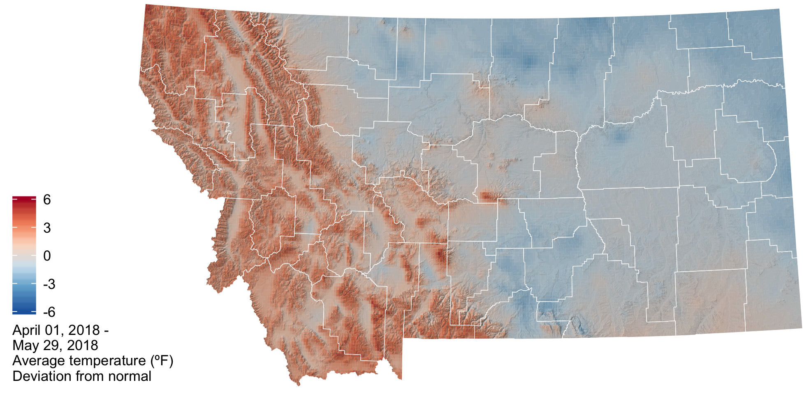
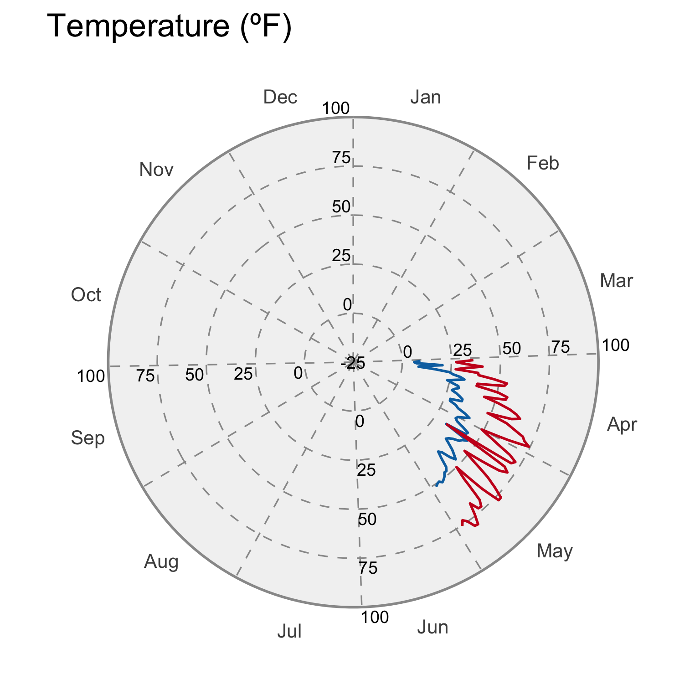
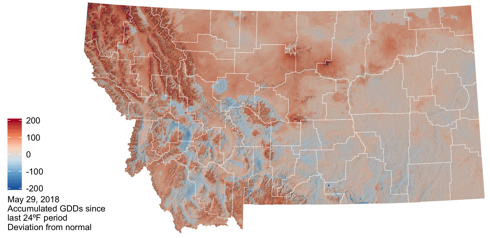
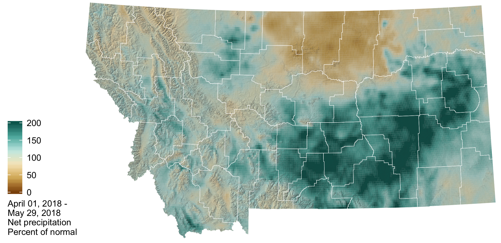

April–May, 2018: Current conditions
 Temperature
Temperature
The lingering effects of this winter’s La Niña contributed to below normal temperatures in early spring. As the La Niña transitioned to ENSO neutral in May we began to experience normal to above normal temperatures for the state as a whole. The cooler than normal temperatures in March and through late April contributed to a delay in the growing season onset and a protracted snowmelt. Increased temperatures in May initiated melt of the above normal snowpack in the Western portions of the state and contributed to significant flooding.


In the graphs below, the bands represent the normal conditions across Montana (red: daily high temperatures, blue: daily low temperatures). The smooth lines are the daily medians; half of the normal values fall within the darker bars; and the lighter bars represent the extremes recorded during the 1981–2010 period. The jagged lines represent this year’s conditions.

GDD
The map below shows the accumulated growing degree days (GDDs) since the last day below 24ºF, which is the temperature damaging to wheat once it reaches the jointing growth phase. The cooler than normal spring temperatures contributed to slightly lower than normal growing degree days across the majority of eastern and central Montana. Here, growing degree days as of May 18th range from ~300 to 600. The mountain and valley regions of north western Montana have experienced slightly higher than normal growing degree days (+50–100) and the current number of accumulated growing degree days range from 100 to 600.

 Precipitation
Precipitation
In general precipitation was much above normal for the state as a whole during the spring season. However, there were isolated pockets of below normal precipitation (0.75 to 2.2 inches below normal) in portions of Northeastern Montana, extending along the highline from Sheridan to Hill counties and for Southwestern Montana in Beaverhead County. These were counties that already had dry conditions from last summer’s drought.


In the graphs below, the bands represent the normal conditions across Montana. The smooth solid line is the daily median; the smooth solid line is the daily mean; half of the normal values fall within the darker bars; and the lighter bars represent the extremes recorded during the 1981–2010 period. The jagged line represents this year’s conditions.

 Snowpack
Snowpack
Snowmelt still continues at higher elevations across the state due to the cooler than normal spring temperatures and above average winter snowfall. This will contribute to elevated soil moisture and higher streamflow into June and reduces the potential for drought and wildfire.

 Soil Moisture
Soil Moisture
Soil moisture is factored into forecasts as an indicator of wet or dry basin conditions and the potential for drought or flooding. The majority of Montana has soil moisture surpluses due to our above normal winter snowpack and above normal rainfall over the last couple of months. Pockets of soil moisture deficit exist in Northeastern Montana and Southwestern Montana and are associated with last summer drought (i.e. eastern MT) and precipitation deficits this winter and spring.
Evapotranspiration
The plot and graph below show the deviation from normal evapotranspiration (ET) so far this year, as estimated from the MODIS satellite. In the map, the green areas are currently experiencing greater amounts of ET than their median amounts from 2000–2017 (the period of record); the brown areas are experiencing less ET. In the graph, the bands represent the normal conditions across Montana; half of the normal values fall within the darker band; and the lighter band represent the extremes recorded during the 2000–2017 period. The jagged black line represent this year’s conditions; the jagged red line represents the 2017 conditions, for reference.
ET across Montana has been lower than normal throughout the spring, and has only approached normal values in early May.


 Drought
Drought
Drought conditions continued in northeastern Montana through April and May. Along the highline in north-central Montana, lower than normal precipitation has led to abnormally dry conditions.